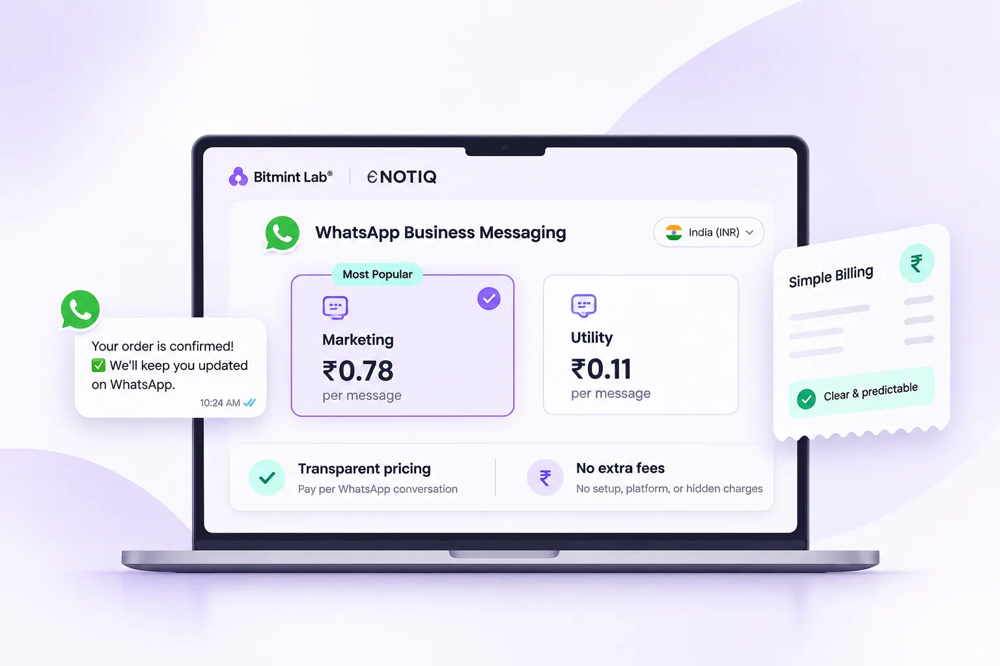

NOTIQ Pricing Explained: WhatsApp API Costs in India

A low monthly subscription does not necessarily mean low WhatsApp marketing costs. Before paying for a platform, Indian businesses need to understand what Meta bills, what the software provider bills, and which extras can change the final amount.
Why WhatsApp API pricing feels confusing
When a business asks, “How much does WhatsApp marketing cost?”, there is no honest one-number answer. Your volume, message categories, destination markets, chosen software and any extra services all influence the bill. Some vendors advertise a low entry price but make the detailed rate breakdown difficult to find.
A sensible evaluation begins by splitting costs into two buckets: Meta's WhatsApp Business Platform charges and the software platform's charges. Both matter, but they come from different providers and serve different purposes.
What Meta charges for WhatsApp messaging
Meta maintains pricing rules for different messaging scenarios, including eligible marketing, utility and authentication template messages. Rates and free-service conditions may change, and destination country can affect the price. The categories are not interchangeable: a promotional offer and an order confirmation are different types of communication.
Check Meta's official WhatsApp pricing documentation rather than relying on an old screenshot or a copied rate card. If a provider quotes a “Meta rate”, ask which category, country and effective date that amount covers.
What a software provider can charge
A WhatsApp API software product may charge for the dashboard and workflows: shared inbox access, seats, campaign management, automations, support, integrations or AI usage. These are not inherently unreasonable costs; the important question is whether they are disclosed before you start.
Other possible expenses include setup help, additional numbers, custom integrations or higher usage tiers. If your business uses AI-generated replies, ask whether tokens, credits or message limits are priced separately.
The Notiq approach: no hidden Meta-rate markup
At Bitmint Lab, we're building the Notiq WhatsApp automation platform with a simple pricing principle: clearly separate Meta's underlying WhatsApp messaging charges from the software subscription, without a hidden markup on Meta's rates. This is our intended product positioning as we prepare for wider availability.
That does not mean WhatsApp campaigns are free, every feature is included in one subscription, or the final total can be predicted without usage details. It means businesses should be able to see which cost belongs to Meta and which belongs to Notiq. Final plans, limits and feature availability should be checked at launch.
How to estimate a monthly WhatsApp budget
Start with the number of customers you intend to contact, then estimate how many messages fall into each applicable message category. For example, 1,000 opted-in marketing recipients and 2,000 transactional updates should be modeled separately, not combined into an assumed flat rate.
Next, multiply each applicable volume by the current Meta category rate for the destination market, taking account of relevant billing rules. Add the chosen software subscription and any genuine extra charges. Finally, leave headroom for seasonal peaks and campaign testing.
Pricing comparison checklist
Ask each provider the same questions before signing: Are quoted WhatsApp message rates the current Meta rates? Is there an additional markup? Are team seats and additional numbers included? What happens when you exceed a usage allowance? Can you export your data? What are the cancellation and renewal terms?
A transparent answer may be more valuable than a cheap-looking headline price. The goal is to keep your cost per meaningful customer interaction predictable as you grow.
Frequently asked questions
Is the WhatsApp Business API free?
The API is not a promise of free messaging. Meta messaging charges may apply, and software or integration fees are separate.
Does Notiq add a markup to Meta WhatsApp rates?
Notiq's stated pre-launch pricing direction is zero hidden markup on Meta's underlying WhatsApp message rates. Confirm the final published terms and applicable fees before subscribing.
Why can two WhatsApp API providers have different prices?
Subscriptions, included usage, team limits, support, integrations, AI credits and any messaging surcharges can differ.
Where can I check the latest WhatsApp API rates?
Use Meta's official pricing documentation and verify the category and destination country.
Build simpler WhatsApp communication with Notiq
Bitmint Lab is developing Notiq with clean interfaces, transparent Meta-rate handling and useful business messaging workflows in mind. Features and plan details will be confirmed as launch approaches.
Explore Notiq's upcoming WhatsApp automation platform and early access →
New to the API? Start with our complete WhatsApp Business API guide for India.
Editorial note: Verify current Meta pricing, eligibility, template rules and consent requirements before running campaigns. Illustrated product visuals are not guaranteed live feature screenshots.